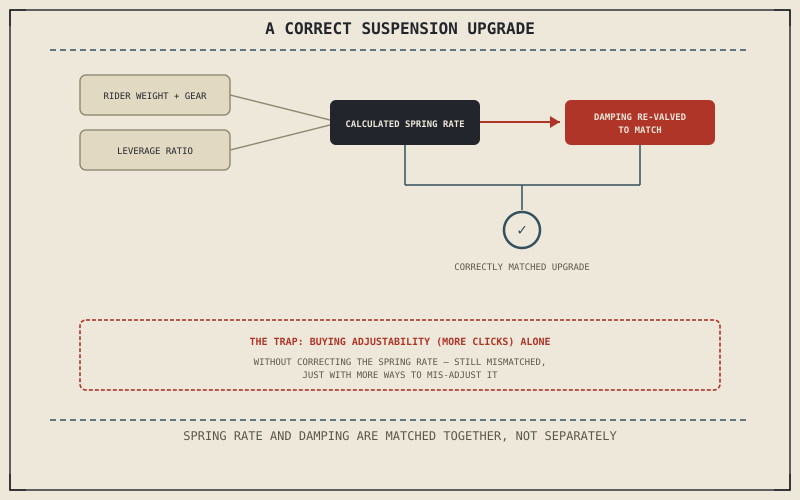

Chapter 5.4 already taught the diagnosis: when preload alone can't bring sag into a sensible range, the spring rate itself is mismatched to the rider, and no amount of adjustment fixes that. This chapter picks up exactly where that diagnosis ends — what a rider actually buys and installs once a genuine mismatch has been confirmed, rather than assumed.
Chapter 13.2 closed by pointing to suspension upgrades next, where matching a modification to the rider replaces matching one to the engine. This chapter is that match.
Choosing a Spring Rate: A Calculation, Not a Guess
Chapter 5.4's sag test confirms a mismatch exists; it doesn't by itself say which replacement rate actually fixes it. Spring rate selection follows from rider weight, including gear, combined with the specific suspension's leverage ratio, typically read from a manufacturer's rate chart built for that exact model rather than picked by feel or by another rider's recommendation on a different bike. Chapter 5.2 already distinguished linear from progressive springs; many riders chasing genuinely consistent feedback specifically choose a linear spring at the correct calculated rate over the stock progressive spring's built-in compromise, once that calculation actually points to a rate worth changing.
Damping Adjustability: The Other Half of the Upgrade
A spring swap alone is often an incomplete fix. Chapter 5.3 established that a damper controls the speed of a spring's compression and rebound, and a stock damper valved specifically for the stock spring rate won't necessarily control a different-rate replacement spring correctly — a stiffer spring paired with unchanged damping can feel harsh and underdamped, while a softer one can feel wallowy even with new components installed. An aftermarket cartridge, or a stock damper professionally re-valved to match the new spring, is what actually completes the upgrade rather than leaving half of Chapter 5.1's two suspension components mismatched to the other.
A spring rate calculated for the rider's actual weight, paired with damping re-valved to control that specific spring, is what an upgrade actually requires — buying either one alone leaves the other half of Chapter 5.1's two suspension jobs working against a mismatched partner.

A diagram showing rider weight and suspension leverage ratio feeding a spring rate calculation, paired with a matching damping re-valve, contrasted against buying only adjustability without correcting the underlying spring rate mismatch.
The Trap of Buying Adjustability Without Understanding It
Aftermarket suspension is often marketed primarily on adjustability — more compression and rebound clicks, more preload range, more knobs to turn — as though more adjustment range were itself the improvement being purchased. Adjustability without a correctly matched base spring rate just gives a rider more ways to mis-adjust the same fundamental mismatch Chapter 5.4 already described, since no click of damping adjustment substitutes for a spring rate that was never suited to the load it's carrying, any more than preload alone could.
A Common Misconception, Cleared Up Early
It's a common assumption that an expensive, fully adjustable aftermarket suspension automatically outperforms a correctly set-up stock one. Chapter 5.4 already showed that a correctly chosen spring with the right preload produces good sag on its own, regardless of price, while an incorrectly chosen aftermarket spring, however adjustable its damper, can leave a rider no better off than before. Chapter 5.4's diagnosis should always come before this chapter's purchase, never after it.
Where This Leads
Chapter 13.4 turns to ergonomic modifications next — bars, pegs, and seats — where matching a component to the rider means matching physical fit rather than weight and spring rate.
Key Concepts to Remember
- Spring rate selection follows from rider weight and the specific suspension's leverage ratio, read from a manufacturer's chart rather than guessed at.
- A spring swap alone is often incomplete without damping re-valved to control the new spring's rate correctly.
- Adjustability alone doesn't fix a mismatched spring rate — it only gives a rider more ways to mis-adjust the same underlying problem.
Cross-References
| ← Ch. 5.4 | Established diagnosing a genuine spring-rate mismatch via sag; this chapter covers the actual replacement purchase once that diagnosis is confirmed. |
| ← Ch. 5.3 | Established damping's role controlling a spring's compression and rebound; this chapter treats a re-valve as necessary once the spring itself changes. |
| ← Ch. 5.2 | Established linear versus progressive spring rates; this chapter treats a correctly calculated linear spring as a common upgrade choice for consistent feedback. |
| → Ch. 13.4 | Covers ergonomic modifications — bars, pegs, and seats. |